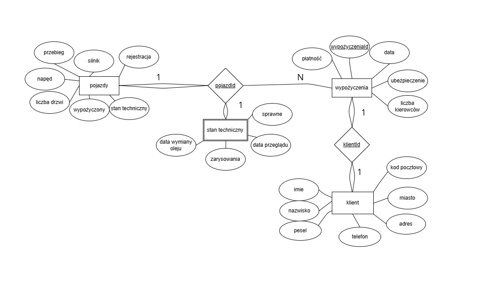
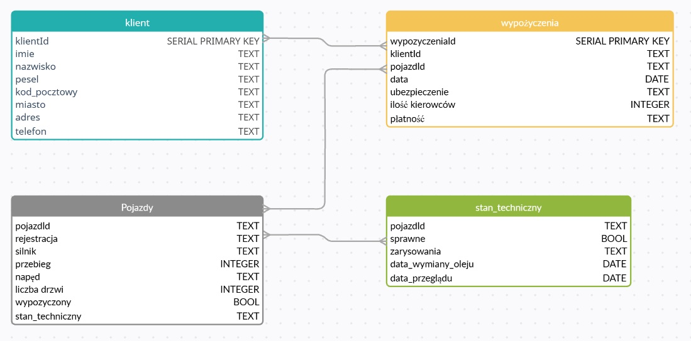
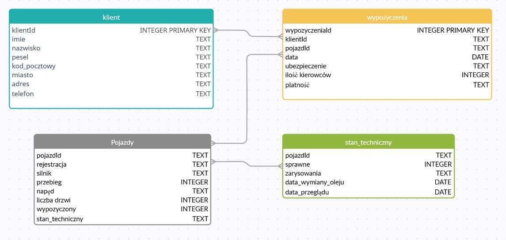

3. Planowanie baz danych i tworzenie dokumentacji¶
- Autorzy:
Wiktor Głogowski
Olga Grześkowiak
Kamil Karaś
3.1. Model Konceptualny¶
Model konceptualny bazy danych dla wypożyczalni pojazdów został oparty na wstępnym planie wymagań oraz schemacie blokowym (diagramie ERD). Głównym celem systemu jest obsługa kluczowych procesów biznesowych: wprowadzania nowego klienta, tworzenia wypożyczeń (powiązań klient-pojazd), odblokowywania pojazdów po zwrocie oraz aktualizacji stanu technicznego floty.
Zidentyfikowano cztery główne encje:
Klient: przechowuje dane osobowe i kontaktowe (imię, nazwisko, PESEL, adres, kod pocztowy, miasto, telefon).
Pojazdy: przechowuje dane katalogowe i statusowe samochodów (rejestracja, silnik, przebieg, napęd, liczba drzwi, status wypożyczenia). Zgodnie ze wstępnym planem, flota obejmuje różne marki (m.in. Kia, Honda, Mazda, Ford, Subaru, Audi, Volkswagen).
Stan techniczny: wyodrębniona encja przechowująca szczegóły eksploatacyjne (informacja czy pojazd jest sprawny, zarysowania, data wymiany oleju, data przeglądu).
Wypożyczenia: encja transakcyjna łącząca klienta z pojazdem, zawierająca szczegóły wynajmu (data, ubezpieczenie, liczba kierowców, rodzaj płatności: przelew/karta/gotówka).
Komentarz do modelu konceptualnego: Diagram ERD wskazuje na relację 1:1 pomiędzy encją klient a wypożyczenia. W rzeczywistym scenariuszu biznesowym relacja ta powinna być relacją jeden-do-wielu (1:N), ponieważ jeden klient docelowo powinien mieć możliwość dokonania wielu wypożyczeń w różnym czasie. Relacja pomiędzy pojazdem a stanem technicznym została na diagramie oznaczona poprawnie jako 1:1, a między pojazdem a wypożyczeniem jako 1:N.
3.2. Model Logiczny z uwzględnieniem normalizacji¶
W ramach projektowania logicznego przeprowadzono proces normalizacji zaleceń ze wstępnego planu, aby uniknąć redundancji danych i anomalii modyfikacji.
Pierwsza postać normalna (1NF): Zapewniono atomowość atrybutów. Wstępny atrybut „adres” z notatek został w modelu logicznym rozbity na „adres” (ulica/numer), „miasto” i „kod pocztowy”. Wyodrębniono podstawowe tabele:
autaiklient.Druga postać normalna (2NF): Usunięto zależności częściowe. Podzielono dane na tabele
klient,auta(pojazdy) orazwypożyczenia, dzięki czemu dane klienta nie powtarzają się przy każdym wypożyczeniu.Trzecia postać normalna (3NF): Wyeliminowano zależności przechodnie. Ostateczny schemat składa się z tabel:
klient,auta(pojazdy),wypożyczeniaorazstan techniczny. Oddzielenie stanu technicznego od tabeli głównej pojazdów pozwala na niezależną aktualizację historii serwisowej bez modyfikacji danych katalogowych auta. Wprowadzono jednoznaczne identyfikatory (klucze główne, m.in.wypożyczeniaId,klientId,pojazdId).

3.3. Model Fizyczny¶
Na podstawie opracowanego modelu logicznego przygotowano wstępne modele fizyczne w postaci skryptów DDL dla dwóch różnych systemów zarządzania bazami danych.
3.3.1. Model fizyczny dla PostgreSQL¶

CREATE TABLE klient (
klientId SERIAL PRIMARY KEY,
imie TEXT,
nazwisko TEXT,
pesel TEXT,
kod_pocztowy TEXT,
miasto TEXT,
adres TEXT,
telefon TEXT
);
CREATE TABLE pojazdy (
pojazdId TEXT,
rejestracja TEXT,
silnik TEXT,
przebieg integer,
naped TEXT,
liczba_drzwi integer,
wypozyczony bool,
stan_techniczny text
);
CREATE TABLE stan_techniczny (
pojazdId TEXT,
sprawne bool,
zarysowania TEXT,
data_wymiany_oleju date,
data_przegladu date
);
CREATE TABLE wypozyczenia (
wypozyczeniaId SERIAL PRIMARY KEY,
klientId TEXT,
pojazdId TEXT,
"data" date,
ubezpieczenie TEXT,
ilosc_kierowcow integer,
platnosc TEXT
);
3.3.2. Model fizyczny dla SQLite¶

- CREATE TABLE klient (
klientId INTEGER PRIMARY KEY AUTOINCREMENT, imie TEXT, nazwisko TEXT, pesel TEXT, kod_pocztowy TEXT, miasto TEXT, adres TEXT, telefon TEXT
);
- CREATE TABLE pojazdy (
pojazdId TEXT, rejestracja TEXT, silnik TEXT, przebieg INTEGER, naped TEXT, liczba_drzwi INTEGER, wypozyczony INTEGER, stan_techniczny TEXT
);
- CREATE TABLE stan_techniczny (
pojazdId TEXT, sprawne INTEGER, zarysowania TEXT, data_wymiany_oleju DATE, data_przegladu DATE
);
- CREATE TABLE wypozyczenia (
wypozyczeniaId INTEGER PRIMARY KEY AUTOINCREMENT, klientId TEXT, pojazdId TEXT, data DATE, ubezpieczenie TEXT, ilosc_kierowcow INTEGER, platnosc TEXT
);